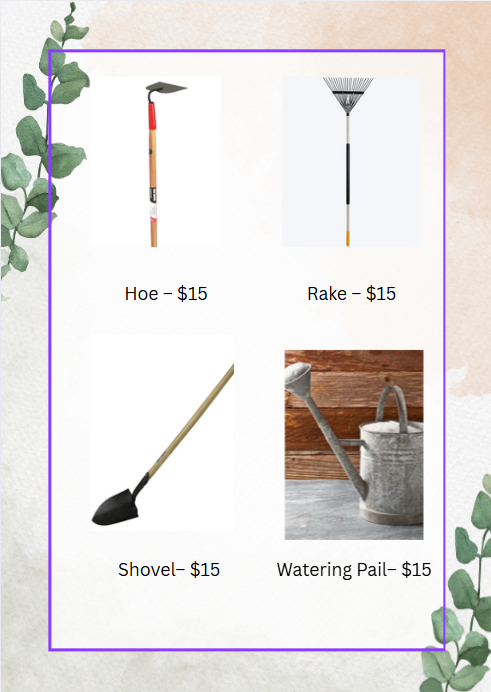

Company Products
At Coltivare we are here to support all of your farming needs! We offer a wide range of agricultural products and farming tools to help you suceed!
Agriculture
Click on me to see how to line up your seeds!
Vegetable Seeds:
All vegetable seeds are $2 per packet.
- Tomato Seeds
- Pumpkin Seeds
- Cucumber Seeds
- Lettuce Seeds
- Pepper Seeds
Fruit Seeds:
All fruit seeds are $2 per packet.
- Apple Seeds
- Orange Seeds
- Strawberry Seeds
- Watermelon Seeds
- Peach Seeds
Fertilizer:
All 50lb bags of fertilizer are $40 each.
- Organic Fertilizer: improves soil structure, promotes microbial activity and increases nutrient availability
- Nitrogen Fertilizer: important for cereal crops and leafy vegetables to promote growth
- Phosphorus Fertilizer: supports reproductive processes and enhaces root development for flowers, fruits and vegetables
To effectively use the fertilizer please refer to the link below from the Department of Energy and Environment
Effective Fertilizer Use
Soil:
All 50lb bags of soil are $10 each.
- Sandy Soil: drains very well and great for plants that require frequent watering and fertilizing
- Silty Soil: a smooth, slippery soil and very fertile for crops such as vegetables and grains
- Peaty Soil: retains moisture well which is great to reduce acidity for farming
Farming Tools
All farming tools listed are pictured below with their associated price
- Hoe: used for digging, weeding and breaking up soil
- Rake: used to level soil, remove debris, and gather leaves
- Shovel: used for digging, turning soil and moving compost
- Watering Can: used for watering plants manually

Contact Us